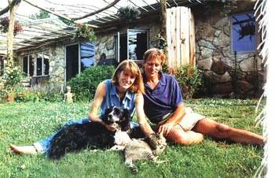
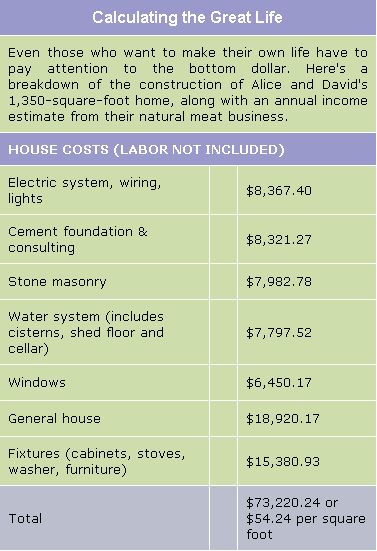
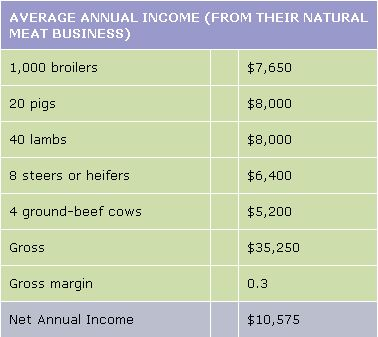
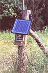
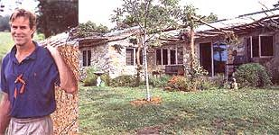
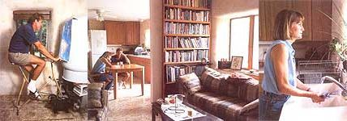
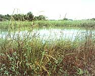
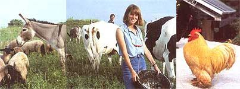

Choosing A Great Life
The Hardest Part is Knowing What You Want
By Sarah Beth Cavanah
October/November 2002
The hardest part is knowing what you want. "I know it sounds strange," Alice Dobbs says, "but it's true." She's sitting on a bench, the unusually warm autumn sun at her back. Her statements are quick and pointed: She doesn't gush.
But as she makes this simple statement, you can feel the truth. How hard was it for Alice and her husband to give up their urbane lives to move to a culturally isolated, rural area? Easy as pie. How difficult was it for them to break away from chemically dependent conventional agriculture to attempt a better, more natural and profitable strategy? A walk in the park. Design, build and operate a livestock operation and off=grid home and derive most of their income, security and shelter from it? No problema.
The hardest part, according to Alice, is finding the courage to ask yourself what you really want, not what others want. Not what society or tradition or Marge at the Piggly Wiggly thinks you should want. Not what special interests or advocates or activists expect you to want. Once you know what you want, everything else falls into place.
THE CHOICE
Alice Dobbs and David Schafer lived in Denver. It was pretty much your standard-issue 1970s American life. They were both working for Trans Globe Tours, a natural choice considering their backgrounds. Alice had spent most of her childhood in South America. David had attended high school in the Philippines and Puerto Rico.
It was a good life.
Then a charter company based in Chicago bought Trans Globe Tours. Alice and David knew they didn't want to move to Chicago. But what did they want They had a good life, but was there a great life waiting for them somewhere?
"Well, you know you can always manage Grandma and Grandpa's farm," David s father offered over the phone one day. "Oh right!" David responded. "Us, farmers."
But the idea didn't fade away. Alice and David found themselves caught between conflicting viewpoints. In one comer was the belief that farming is hard, physical and repetitive with little reward or gratitude from the larger society that feeds off the farmer's work. But another perspective kept insisting its questions be answered: If it was so awful, why did farming call to them? Alice and David knew they tended to romanticize farm life. But what could be better for two independent, nature-loving people than answering to no one but themselves and working outdoors with animals? How important is money compared to freedom from the burdens of its pursuit?
The battle lines were drawn. City friends pushed for romanticism. Country friends politely told them they were idealistic fools. Ultimately, romanticism won.
THE BEAUTY OF IGNORANCE
The couple kicked off the 1980s by moving onto David's grandparents' 540acre farm near Trenton, Missouri. You may remember the 1980s as the time agriculture bled all over the nation's conscience. By the end of the decade, Willie Nelson had organized Farm Aid, the national mainstream media had gorged on foreclosed-farm stories and thousands of family farms had disappeared.
Alice and David didn't know they were buying in right before the crash. They admit their ignorance with a strange sort of neutrality. In fact, they believe it was vital to their ability to create the lifestyle they really wanted.
In their discussions of the process, Alice and David don't bring up fate or kanna, but you feel their belief that something extraordinary happened when they note the uncanny appearance of the right people at the right time to support their project. When people told them how to farm, they listened. They took agriculture classes at the local junior college and tried to put the conventional methods into practice. They struggled to master the art of discing for row crops.
David got a crash course in wheel-hearing repair from a child who diagnosed the broken corn-picker while walking by on the road. Alice and David saw their hopes of a great calf crop fade as they watched their best young bull prospect try to breed heifers from the wrong end.
It was hard, demanding and sometimes nearly fruitless work. Luckily, Alice and David were open to new ideas. So when they visited a ranch in New Zealand and saw sheep being moved from small pasture to small pasture, they naturally thought the idea could work for them.
With a little help from electric fencing and a border collie named Buckley, Alice and David divided their sheep pasture into smaller sections to better manage their grass. It worked so well, they attempted to apply the practice to cattle. Each miniherd was happy to move, but there were challenges. Sometimes the bull, seeing his girls being stolen, would block all attempts to move the heifers to a new pasture. It was one of their many lessons in low-impact animal husbandry: Trying to get animals to go against their own natures is an easy path to frustration.
HOUSE OF DREAMS (AND VIEWS)
The outside world sometimes added to the challenges Alice and David faced as they explored their new life. Industrial hog farms colonized the surrounding countryside. Alice considered and declined an opportunity to become Missouri's Director of Agriculture. The couple's natural meat business grew. And somewhere in the middle of all the self-proclaimed ignorance, mistakes, successes, opportunities and frustrations, Alice and David finally came to understand exactly what they wanted.
Over the years. they had learned to work with nature and trust the principle that form follows function. After living in an old, leaky farmhouse on more land than they needed, they wanted a homestead that required minimal maintenance and returned maximum efficiency. They transferred their nearly 20 years' experience to an undeveloped, smaller parcel where they thought they could put their knowledge to work more effectively.
By building a pond on the highest point on their land, watering the livestock would be left to gravity. Security would be provided by jenny the Guard Donkey, another of Alice and David's experiments. (jenny worked very well after a few initial problems: She kept protecting lambs from their own mothers.)
Alice took some home-building classes, which weren't as helpful as she would have liked. They read books about efficient design and sustainable building techniques.
Alice was the home's principal architect. She planned a small house, but not so small each person couldn't find a private space. The whole operation would operate independent of the utility grid, so it was vital for the house to catch the winter sun, and avoid the summer sun. The best design for both purposes was a long, narrow house. But efficiency wasn't their only consideration. Alice carefully planned the placement of rooms and windows for the best views. She thought about what they would be able to see while lying in bed. She even considered the view someone perched on the composting toilet would see out the bathroom window.
Alice and David wanted freedom from the utility companies, but they also wanted to be comfortable. Their 1,350-square-foot home gathers two-thirds of its heat from sunlight. Electricity generated by six photovoltaic panels (each rated at 110 watts) is stored in 12 golf-cart batteries to power (in responsible usage patterns) the energy-efficient refrigerator, two computers, a VCR and a grain grinder. Compact fluorescent lightbulbs lend their light to cloudy or winter afternoons. A battery-monitoring meter tells them exactly how much electricity is consumed by every appliance and lightbulb.
"You should see what a hair dryer does to the meter," David says.
Drinking water is collected off a-large shed roof north of the house. The metal roof directs the water to two 3,000-gallon, inground, concrete cisterns on the west side of the shed. For every inch of rain that falls, the cisterns collect around 1,000 gallons of water. The water is sent through a silver-impregnated charcoal filter, pumped clear and fresh with power supplied by Alice or David and a converted exercise bike. A few minutes of pedaling each morning provide enough water for the day. Alice and David set up the system to provide much more water than they use, even for laundry.
Water heating in their home is a true fusion of cultures: Cold water circulates to a Bosnian-made cookstove. The fire heats the water, which then flows into the next room where an Amish-style heat-exchanger keeps the water warm. Hot water from the stove rises, circulates, then sinks back down as it cools, only to be heated again. The water can stay hot for about 36 hours between fires.
THE GREATEST LIFE
The house and land used up most of Alice and David's savings, but in the end, they were left with a X35.000-a-year business, no mortgage, only a telephone hill and a small income from renting their Denver home.
They buy livestock in the spring, raise it, and have it butchered in the fall. Ten to 12 times a year, they load LIP their meat and take it to a farmer's market in Kansas City, Missouri. After a slow start, the couple has attracted a dedicated and loyal customer base. Some insist on paying more than the listed price for their meat; a few customers are even converted vegetarians. (For more information, see www.schaferfarmsnaturalmeats.com )
For Alice and David, time and freedom may be the greatest benefits of all in the lifestyle they've created. Management of the animals takes less than an hour a day. They use their winters to travel, visiting family in the British Virgin Islands and traveling to places like Hong Kong. David came back from China recently with an idea for a smallscale chicken plucker he now markets across the United States.
Their initial journey through fanning and ranching in northern Missouri was a faltering, unguided and undirected trip toward the life they wanted. Now, they feel they've reached their destination.
So when Alice Dobbs sits on a bench outside her new home and tells you that the hardest part is deciding what you want, her words ring true. The hard part was taking the leap to be farmers 20 years ago. The hard part was believing they could do it. The hard part was trusting they knew what they wanted better than society or tradition or even sustainable-lifestyle magazines.
Once they'd conquered that, everything else was just details.
|
 Photos y Tatjana Alvegaard Alice and David use rotational gazing to heal damaged croplands |
 Even the movable electric fencing for the paddocks is solar- (and human-) powered. |
 A work inprogress, this arbor has been planted with grapes and honeysuckle to provide shade. |
 A converted exercise bike serves as a water pump. Five to 10 minutes every other day is usually all that is needed to supply their daily water needs. Right: The Dishwasher in Alice and David's house may have hands, but off-the-grid living still leaves space for several creature comforts. |
 The livestock pond purposely was placed at the land's highest point, so gravity would do the transportation work. |
 To keep the operation running with as little maintenance as possible, Alice and David take advantage of natural animal tendencies. Jenny the Guard Donkey prottects sheep, while silkie bantam chickens help with pest control. |
|
 |
 |
 |